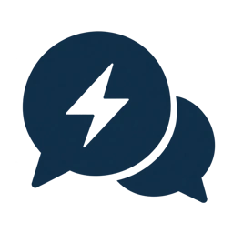

01 DATA
Collect readings
Meters, inverters and BMS — agreed site data sources.
METERING / GENERATION / STATUS
Operion OS is software for businesses with solar generation, battery storage and complex energy metering. One interface for energy balance, asset schedules, control rules and financial performance.
01 / VISIBILITYData from every metering point
02 / ECONOMICSDecisions grounded in economics
03 / CONTROLYour rules and constraints
Select your sector to see the operational challenge the platform can help address and where to begin the assessment.
Generated illustrations of business scenarios. Animations explain the concept; they do not show real site readings.
You have solar PV, battery storage or several metering points, but energy decisions are still made manually. Optimisation requires usable data, technical access and tariffs that make the scenario economically viable. A conventional office with one meter and no controllable assets may only need a simpler solution.
Solar generates. BESS stores. The meter records.
Operion OS helps coordinate how they work.
From isolated readings to shared context for the energy manager, engineer and executive. Data, planning and execution tracking in one workflow.
Meters, inverters and BMS — agreed site data sources.
METERING / GENERATION / STATUSMatch generation and consumption with the site's operating conditions.
DEMAND / TARIFF / LIMITSChoose a feasible charging, discharging and self-consumption scenario.
FORECAST / SCENARIO / SCHEDULETrack execution within the agreed operating mode and reserve.
RULES / PLAN VS ACTUAL / VARIANCEIllustration of the workflow. Data sources and available commands are checked for each site.
Energy metering for consumption and generation: metering points, historical readings and the site's energy balance.
A coordinated generation, charging and discharging schedule that accounts for prices, technical limits and reserves.
Shared data, different responsibilities. Each role gets the context needed to make its decisions.
SHARED CONTEXT One shared view of the balance, technical constraints and results across your team.Illustration of capabilities. Available data depends on the site's integrations.
Three parts of one system: data sources, agreed operating logic and clear results.
Solar PV, inverters, BMS and meters.
Load, reserve and technical limits.
Tariff, market prices and generation forecast.
Technical limits and reserve take priority.
Clear actions for the energy manager and operator.
Available commands within the selected mode.
Energy, execution and economics for the period.
We verify access to data and commands during the technical audit. The algorithm and level of automation are agreed before launch.
Our implementation process ↗Select your site's configuration. Explore the task, the solution logic and what we need to check first.
Explore how the operating scenario changes throughout the day. This is an educational example, not current market prices or real customer data.
Four stages. Each delivers a clear outcome and a decision on the next step.
Select a stage to explore the detailsWe start with what is already working at your site.
An inventory of available data and technical constraints.
We compare baseline operation with possible charging and discharging schedules.
An estimate of the impact with explicit assumptions and applicability limits.
We connect the agreed sources and verify that the plan can be executed.
Agreed rules, available commands and control mode.
We compare the plan with actual performance and investigate deviations.
Transparent operational and energy records.
Select what is available. This helps us get started; it is not a mandatory checklist.
Let's discuss what matters before work begins.
Technical and commercial terms are defined after analysing your specific site.
Already have solar PV, battery storage and meters? Let's explore how to bring them into a coordinated system and which scenarios are worth testing at your site.
Describe your situation in a few words. A detailed technical specification is not needed at this stage.